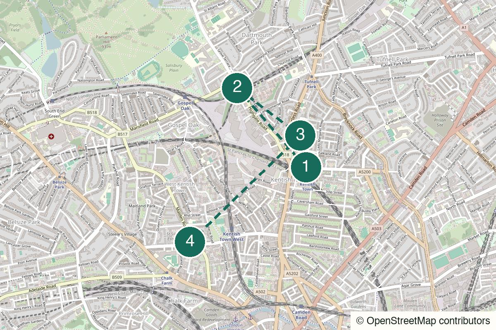

London Not yet field-walked
Crystal Palace
Views, eccentric park details and a pub finish that earns itself.
Start Crystal Palace
Not yet field-walked · verify live details
Two backstreet pubs and a small music room, wired into one easy north London evening.
No field notes from readers yet — share one if you walk it.
Kentish Town Northern line or Kentish Town West – Set The Southampton Arms as the first pin and make the initial five-minute walk.
The Southampton Arms
Open the whole walk (opens in a new tab)
Verify cash policy, food service, listings and walking time to the selected music room.
We never ask for your location.
Start with a full stop of a first pint, move through residential streets to a second local, then take the last decision from the listings rather than the plan.
Not a dinner route and not a polished Camden nightlife itinerary.
Good for a second or third date if both people genuinely like pubs and a little looseness.
Works for two to four; keep it small enough for pub seating and a small venue.
The pubs work alone, but the gig branch is more useful with a companion.

Kentish Town station, London NW5
From the start Arrive by Northern line or Kentish Town West, then set the first pub pin.
An easy station start: no central-London detour and no need to choose the evening at the platform.
Walk here from the station to Kentish Town station (opens in a new tab)
139 Highgate Road, London NW5 1LE
From the previous stop Walk to Highgate Road and number 139. Verify payment policy and seating before going.
The first-pint anchor: hand pumps, no reservations and a deliberately narrow proposition. Treat any cash-only expectation as something to verify, not a promise.
Walk from the previous stop to The Southampton Arms (opens in a new tab)
51 Leverton Street, London NW5 2NX
From the previous stop Turn into the residential streets and walk to Leverton Street. Check whether the Thai kitchen is currently operating before relying on food.
A Victorian local in the back streets, saved by its regulars: a second room that makes the later gig feel optional rather than obligatory.
Walk from the previous stop to The Pineapple (opens in a new tab)
1 Malden Road, London NW5 3HS
From the previous stop Use the current listing and the live route to Malden Road. The Dublin Castle on Parkway is the more scene-led alternative if its listing is better.
A small, chaotic-in-a-good-way room for unknown bands. If neither listing works, finish after the second pub without apologising for it.
Walk from the previous stop to The Fiddler’s Elbow – gig branch (opens in a new tab)
Nearest practical station: Kentish Town or Camden Town
The entire route stays inside a roughly fifteen-minute station radius; choose the gig room that makes the exit simpler.
Open Kentish Town (opens in a new tab)Open Camden Town (opens in a new tab)
Weekday or weekend evening
Do not promise dinner: treat food as a possible bar-kitchen bonus and eat before arrival if needed.
The no-ticket version: enough shape for a full evening without a gig.
Go only when the listing makes the last walk worthwhile.
Keep both pub stops and skip the gig if weather or listing makes the final leg feel pointless.
Choose the better current gig listing, not the longer walk by default.
End after either pub and return to Kentish Town.
Help keep it useful
Closed gates, changed hours and the point where you bailed are more useful than polite applause.